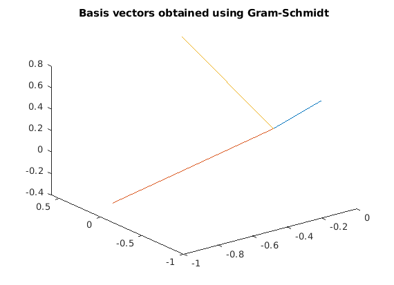

Contents
clear; close all; clc;
GramSchmidt ortogonalization for N = 3
N = 3; basis = gramSchmidt(N) rotate3d on for i = 1:N plot3([0 basis(i, 1)], [0 basis(i, 2)], [0 basis(i, 3)]); hold on; end title('Basis vectors obtained using Gram-Schmidt')
The basis vector can be checked for orthonormaility by checking if the inverse of the matrix is the same as the transpose of the matrix. To account for error in the computation, we can use the round function. If the sum of all the elements of the difference between the transpose of the basis and inverse of the basis is 0, then the basis vectors are orthonormal.
sum(sum(round(basis' - inv(basis), 4)))
ans =
0
Checking for any N dimensional matrix. Here, N = 100 is checked for
N1 = 100; basis1 = gramSchmidt(100); sum(sum(round(basis1' - inv(basis1), 4)))
Function
function basis = gramSchmidt(N) % First start with a basis vector and normalize it. Then for each loop % from 2:N, compute the projection of a random vector along each of the % bases vectors that are already computed. The difference between the % vector and the bases vectors upon normalization will be the new % column of the bases matrix basis = randn(N, 1); basis = basis/norm(basis, 2); for i = 2:N v = randn(N, 1); v = v - basis * basis' * v; basis = [basis v/norm(v, 2)]; end end
basis =
0.8918 0.2373 0.3852
-0.0329 0.8832 -0.4678
-0.4512 0.4045 0.7955